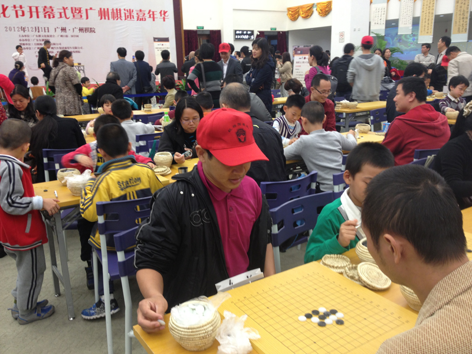

广东省政协副主席徐尚武、中国围棋协会主席王汝南等领导嘉宾，以及全国业余顶尖高手、广州棋迷、广东多个棋类机构的负责人等近千人参加了开幕式。
没人敢来挑战的擂主。。

围棋五子棋亲子赛、围棋五子棋小全能赛
棋文化有奖问答 很多认照片的。。。 猜背影。。。
小P孩我要吃鸡比…… 由于15路棋盘同时用于多项比赛，包括围棋，所以只剩下19路了，，，
王汝南为五子棋冠军家庭颁奖
牛牛与王汝南合照，，手上没有，，要等他上传
［此帖子已被 无尽 在 2012-12-2 15:20:43 编辑过］
［ 雅山看黄昏 于 2012-12-2 16:18:09 时花20金币送鲜花一朵］
［ 雅山看黄昏 于 2012-12-2 16:18:09 时花20金币送鲜花一朵］
［ 雅山看黄昏 于 2012-12-2 16:18:09 时花20金币送鲜花一朵］
牛牛清缘卡哇伊の牛牛大师，话说清缘大师的发型 哇咔咔
清缘大师一直都这么哇咔咔的..